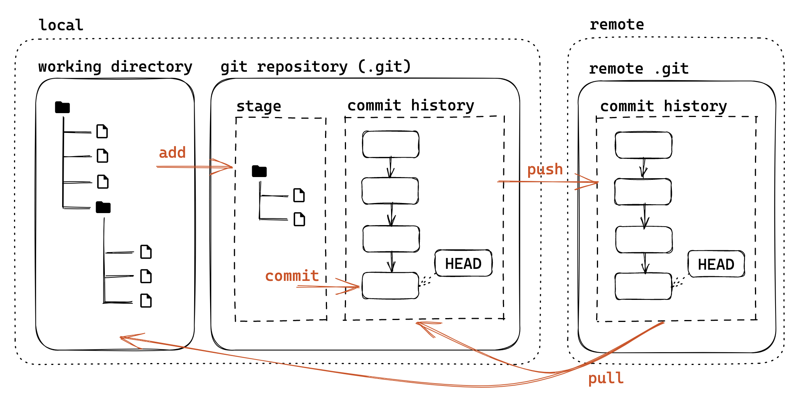
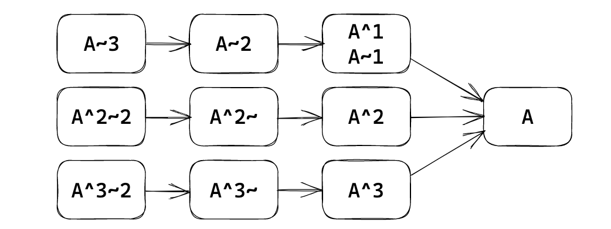

git
基本概念
-
工作区：仓库目录。工作区独立于各个分支。
-
暂存区：数据暂时存放的区域，类似于工作区写入版本库前的缓存区。暂存区独立于各个分支。
-
版本库：存放所有已经提交到本地仓库的代码版本
-
版本结构：树结构，树中每个节点代表一个代码版本。

暂存
-
git status：查看当前工作区和暂存区状态- 文件三个类别：未跟踪（Untracked）、已追踪（Tracked）、被忽略（Ignored）
-
删除文件：
git rm --cached：将一个已暂存的新文件取消暂存rm：只在本地删除版本库中不存在的文件，要想删除版本库文件，还需执行git add File与git commitgit rm：删除本地，并且放到暂存区，只需要commit（删除的文件需和当前版本库文件内容相同）git rm -f：要删除的文件已经修改过
-
.gitignore文件： -
git check-ignore -v *file*：查看某个文件是否被忽略，以及匹配的规则 -
常用语言的
.gitignore模板：github/gitignore
提交
-
git commit -a (--all)：自动暂存所有更改的文件 -
git log：查看提交历史--oneline：每一个提交一行，--graph：显示分支结构，通常配合使用--stat：显示文件删改信息-p：显示详细的修改内容
-
每个提交都有一个唯一的
sha-1标识符（40 位十六进制数）git show *id*：显示提交详细信息（id在不重复前提下可以只写前几位）
-
检出之前的某一版本：
git checkout *id*
commit message
-
意义：记录更改的原因/内容，方便定位/回溯（特别是合作项目）
-
Angular 规范（来源：angular/angular:CONTRIBUTING.md）
1
2
3
4
5<type>([scope]): <summary>
[body]
[footer]- type：更改类型（fix/feat/docs/refactor/perf/test/ci/…）
- 重大更改可以写 BREAKING CHANGE 或 DEPRECATED（全大写）
- scope：影响范围（可选，比如具体影响的模块等）
- summary：更改的简要描述，英文一般现在时，首字母小写句末无句号
- body：详细描述，可选
- footer：解决 issue 了可以写 Fixes #id 或 Closes #id
- type：更改类型（fix/feat/docs/refactor/perf/test/ci/…）
版本号
- 创建标签：
- 轻量标签：
git tag *tag* *id*（*id*可选，默认为HEAD） - 附注标签：
git tag -a *tag* -m "*message*" *id*
- 轻量标签：
- 查看标签：
git tag - 版本号命名一般规范：Semantic Versioning 2.0.0
- v主版本号.次版本号.修订号[-预发布版本号]
- 修订号：兼容修改，修正不正确的行为
- 次版本号：添加新功能，但是保持兼容
- 主版本号：不兼容的 API 修改
- 且为 0 时表示还在开发阶段，不保证稳定性
- 预发布版本号：alpha/beta/rc.1/rc.2/…
- e.g. v1.0.0-beta < v1.0.0-rc.1 < v1.0.0 < v1.0.1
分支
- 创建分支
git branch *name*：基于当前HEADgit branch *name* *id*：基于id提交
- 查看分支
git branch（带-a显示远程分支）git show-branch更详细
- 切换分支
git checkout *name*git checkout -b *name*：创建并切换
- 内容比较
git diff *branch1* *branch2*：比较两个分支git diff *branch*：比较工作区和分支git diff：比较工作区和暂存区
- 强制修改分支位置
git branch -f main HEAD~3：让分支指向另一个提交（将 main 分支强制指向 HEAD 的第 3 级父提交）
HEAD
HEAD 是一个对当前所在分支的符号引用，通常情况下指向分支名
想看 HEAD 指向，可以通过 cat .git/HEAD 查看， 如果 HEAD 指向的是一个引用，还可以用 git symbolic-ref HEAD 查看它的指向。
detached HEAD：HEAD 指向某个历史提交，而不是某个“分支”：git checkout *id*
引用
-
可以基于引用使用 ~ 或 ^ 定位父提交
-
~ 表示第一个父提交，~2 表示第一个父提交的第一个父提交
-
^ 表示第一个父提交，^2 表示第二个父提交
-
-
一个提交可能会有多个父提交（merge commit）

远程
git remote -v：查看远程仓库地址